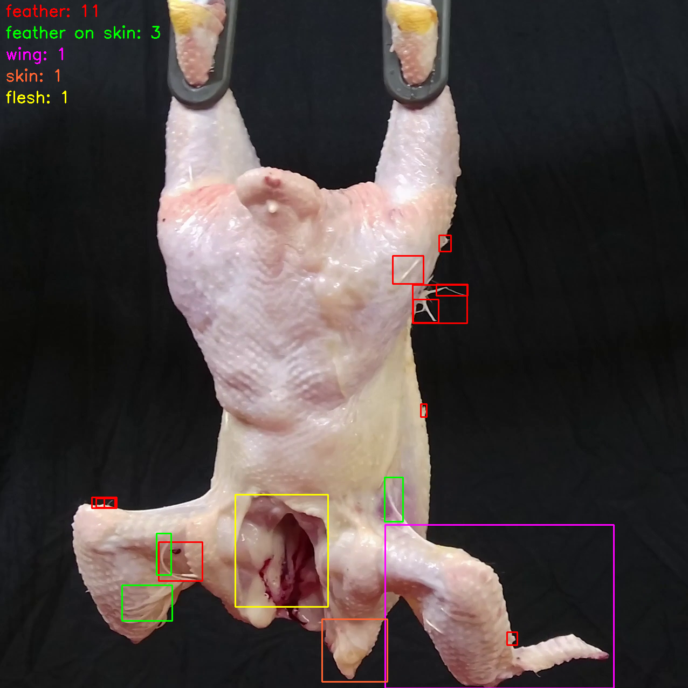
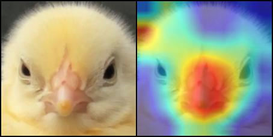
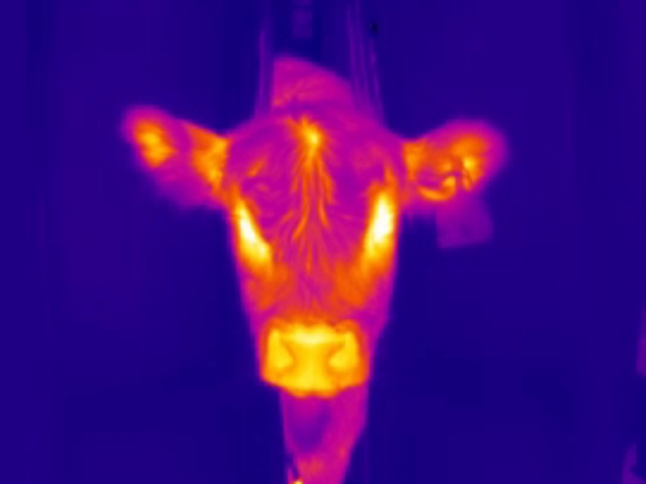
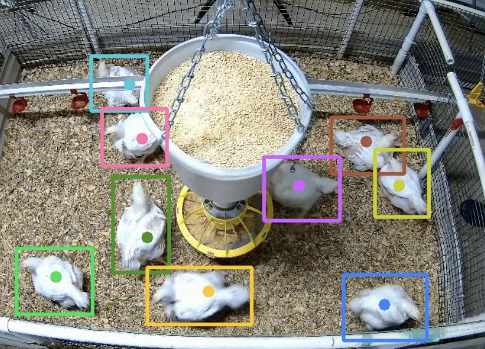
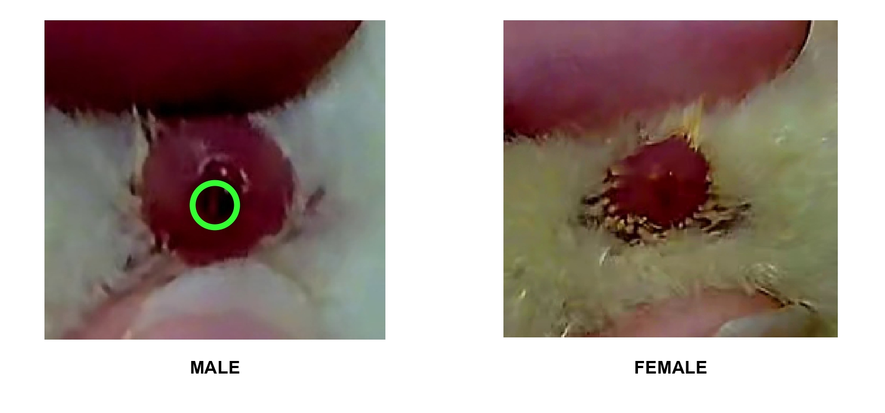
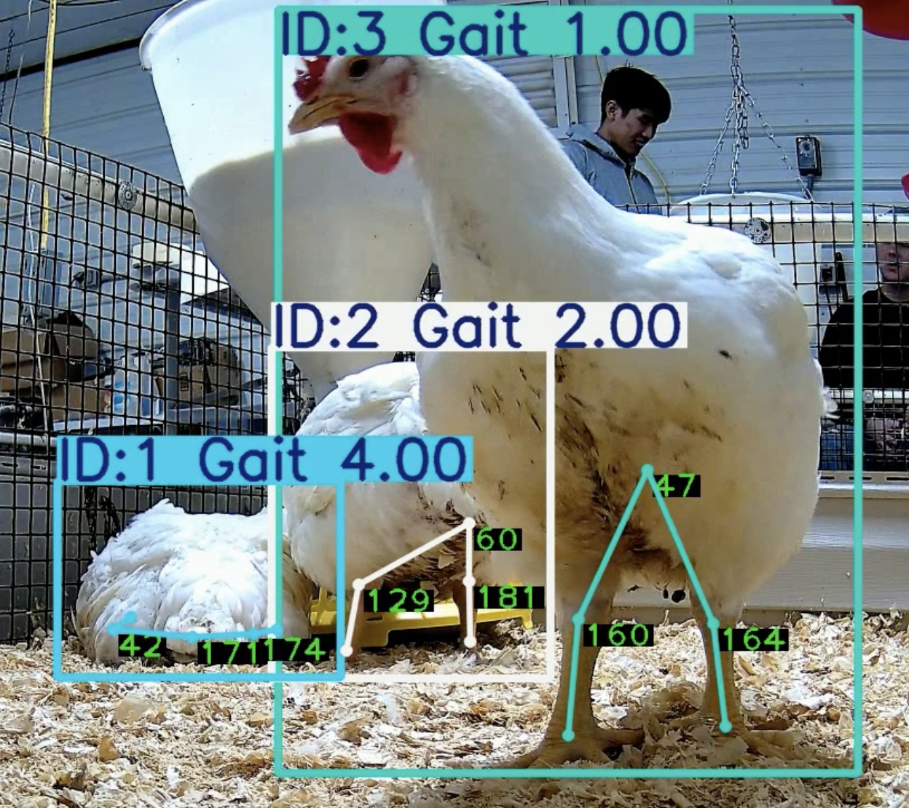

Research Program - AICV Lab - University of Arkansas
Animal Welfare
We study animal welfare through rigorous, collaborative research designed to deepen understanding and contribute practical knowledge to the field.
Our work
Research Projects
Explore the studies that make up our animal welfare research program.

Research project
CarcassFormer
An end-to-end Transformer-based framework for poultry carcass defect assessment.
View project
Research project
Facial Chick Sexing
An automated chick sexing system using facial images of day-old chicks.
View project
Research project
CattleFever
An automated cattle fever estimation system using RGB and thermal imagery.
View project
Research project
DeepBroilerTrack
End-to-end automatic tracking of multiple broilers using multiple cameras.
View project
Research project
VentVision
A multimodal vision-based system for automated vent-based chick sexing.
View project
Research project
MiGa
A computer vision system for multi-chicken gait assessment.
View project